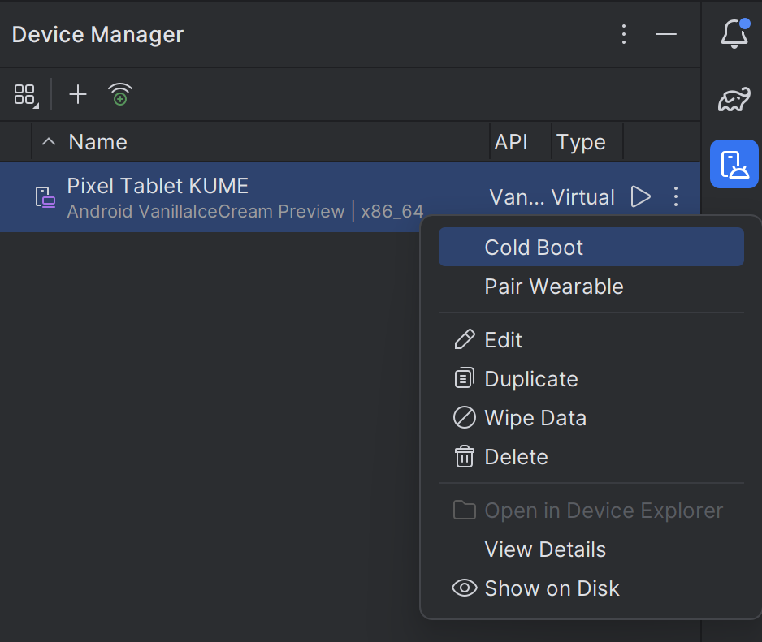
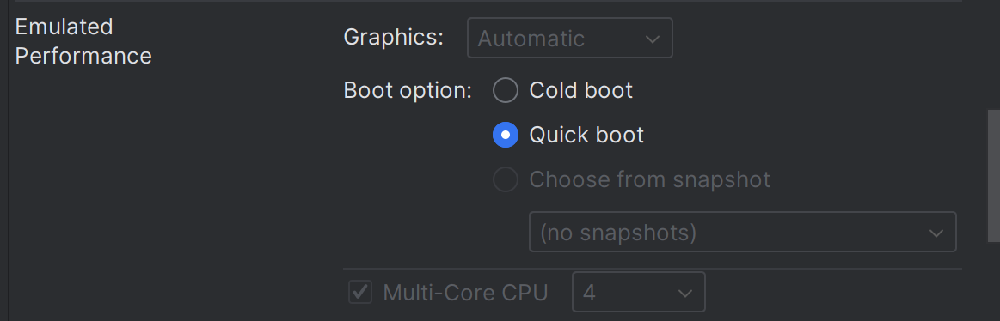

エミュレーターが動かない場合の対処法
１．エミュレーターが起動しない場合
- まずは，Android Studioを再起動します．
※この際すべてのファイルの変更が保存されていることに注意してください．
- 起動後はエミュレーターを動かしたり，appを走らせたりしないこと！
-
まずはDeviceManagerの画面を開いて，3点リーダーをクリックしてWipe Dataを選択します

- Wipe Dataが成功したことを確認してから，エミュレーターを起動もしくはappを走らせてください
2. エミュレーターは起動するが，Googleの起動画面の後に黒い画面が表示されてしまう場合
- 一度，エミュレーターや走らせているappを停止します．
※この際，停止ができずぐるぐるしてしまう．または停止後起動できない場合は上記1番の対処法を取ってください
-
DeviceManagerの画面を開いて，3点リーダーをクリックしてEditを選択します
-
Config -> GraphicsをAutomaticからSoftwareにします
